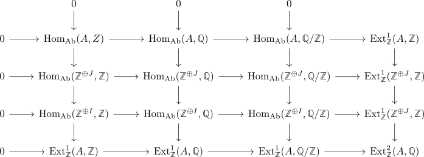
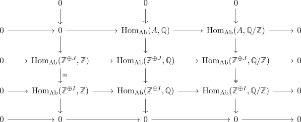
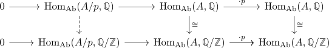
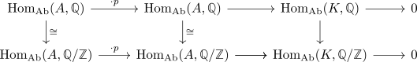
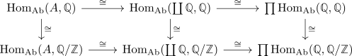

derived hom(-,Z) is conservative
Proposition
The derived hom functor
is a conservative functor
Proof
a)
using exact functor reflecting zero object and conservative it suffices to show that $\mathrm{map}(A,\mathbb{Z})$ is zero if and only if $A$ is the zero group. since each object in the derived category of a hereditary ring splits, we may assume that $A$ lies in the heart and $\mathrm{map}(A, \mathbb{Z}) \simeq 0$. In particular, $\pi_*(\mathrm{map}(A, \mathbb{Z})) \cong 0$ or $\mathrm{Hom}_{\mathrm{Ab}}(A, \mathbb{Z})$ and $\mathrm{Ext}_{\mathbb{Z}}^{1}(A, \mathbb{Z})$ is zero.
So let $\mathbb{Z}^{\oplus I} \rightarrow \mathbb{Z}^{\oplus J} \rightarrow A$ be a projective resolution and consider short exact sequence of the rational circle group. Then we may consider the long exact sequences of Ext

where each column and row is exact.
Now we simplify
- $\mathrm{Ext}_{\mathbb{Z}}^{1}(\mathbb{Z}^{\oplus J}, \mathbb{Z}), \mathrm{Ext}_{\mathbb{Z}}^{1}(\mathbb{Z}^{\oplus I}, \mathbb{Z}) \cong 0$ as $\mathbb{Z}^{\oplus I}, \mathbb{Z}^{\oplus J}$ are projective - alternatively use Snake Lemma to conclude that $\mathrm{Hom}_{\mathrm{Ab}}(A, \mathbb{Q}/\mathbb{Z}) / \mathrm{Hom}_{\mathrm{Ab}}(A, \mathbb{Q}) \simeq \mathrm{Hom}_{\mathrm{Ab}}(\mathbb{Z}^{\bigoplus I}, \mathbb{Z})/\mathrm{Hom}_{\mathrm{Ab}}(\mathbb{Z}^{\bigoplus J}, \mathbb{Z})$ which vanishes by assumption.
- $\mathrm{Ext}_{\mathbb{Z}}^{1}(A, \mathbb{Q}),\mathrm{Ext}_{\mathbb{Z}}^{1}(A, \mathbb{Q}/\mathbb{Z}) \cong 0$ as $\mathbb{Q}, \mathbb{Q}/\mathbb{Z}$ are injective (cf. divisible abelian group as injective object, rational circle group is an injective group).
- $\mathrm{Ext}_{\mathbb{Z}}^{1}(A, \mathbb{Z}), \mathrm{Hom}_{\mathrm{Ab}}(A, \mathbb{Z}) \cong 0$ by assumption.

Now $\mathrm{Hom}_{\mathrm{Ab}}(\mathbb{Z}^{\oplus J}, \mathbb{Z}) \rightarrow \mathrm{Hom}_{\mathrm{Ab}}(\mathbb{Z}^{\oplus I}, \mathbb{Z})$ is an isomorphism (cf. sandwhiched by zero object and isomorphism) and $\mathrm{Hom}_{\mathrm{Ab}}(\mathbb{Z}^{\oplus J}, \mathbb{Q}/\mathbb{Z}) \rightarrow \mathrm{Hom}_{\mathrm{Ab}}(\mathbb{Z}^{\oplus I}, \mathbb{Q}/\mathbb{Z}), \mathrm{Hom}_{\mathrm{Ab}}(\mathbb{Z}^{\oplus J}, \mathbb{Q}) \rightarrow \mathrm{Hom}_{\mathrm{Ab}}(\mathbb{Z}^{\oplus I}, \mathbb{Q})$ are surjective.
Hence applying the Four-Lemma of monomorphisms twice shows that $\mathrm{Hom}_{\mathrm{Ab}}(\mathbb{Z}^{\oplus J}, \mathbb{Q}/\mathbb{Z}) \rightarrow \mathrm{Hom}_{\mathrm{Ab}}(\mathbb{Z}^{\oplus I}, \mathbb{Q}/\mathbb{Z}), \mathrm{Hom}_{\mathrm{Ab}}(\mathbb{Z}^{\oplus J}, \mathbb{Q}) \rightarrow \mathrm{Hom}_{\mathrm{Ab}}(\mathbb{Z}^{\oplus I}, \mathbb{Q})$ are also injective and therefore also isomorphism.
Then as $\mathrm{Hom}_{\mathrm{Ab}}(-, \mathbb{Q}/\mathbb{Z})$ is conservative (cf. ordinary hom into rational circle group is conservative) and hence $\mathbb{Z}^{\oplus I} \rightarrow \mathbb{Z}^{\oplus J}$ is an isomorphism - so in particular its cokernel, which is by assumption $A$, vanishes.
alternative proof(sketch)
Observe that it suffices to show that if $\mathrm{Hom}_{\mathrm{Ab}}(A, \mathbb{Q}) \rightarrow \mathrm{Hom}_{\mathrm{Ab}}(A, \mathbb{Q}/\mathbb{Z})$ is an isomorphism (i.e. $\mathrm{Hom}_{\mathrm{Ab}}(A, \mathbb{Z}), \mathrm{Ext}_{\mathbb{Z}}^{1}(A,\mathbb{Z})$ as kernel/cokernel vanish).
we first show that $A$ is a uniquely divisible group, hence a vector space (cf. Q-Vector space is uniquely divisible abelian group). So let $p$ be arbitrary, then we need to show that multiplication with $p$ is an isomorphism Let's show that is surjective, i.e. $A/p = \mathrm{coker}(\cdot p: A \rightarrow A)$ vanishes. For that consider the exact sequence $A \rightarrow A \rightarrow A/p \rightarrow 0$ and we then get exact sequences

Now the right morphism is multiplication with $p$, since $\mathrm{Hom}_{\mathrm{Ab}}(-, -)$ is additive in both variables.
Moreover, $\mathrm{Hom}_{\mathrm{Ab}}(-, \mathbb{Q})$ is a $\mathbb{Q}$ vector space, so multiplication with $p$ is an isomorphism. This shows that $\mathrm{Hom}_{\mathrm{Ab}}(A/p, \mathbb{Q})$ vanishes (or use that $A/p$ is p-torsion) and since taking kernels is functorial, this shows that $\mathrm{Hom}_{\mathrm{Ab}}(A/p, \mathbb{Q}/\mathbb{Z})$ also vanishes. But $\mathrm{Hom}_{\mathrm{Ab}}(-, \mathbb{Q}/\mathbb{Z})$ is conservative (cf. hom into Q/Z is conservative), hence $A/p \simeq 0$.
Now we show that multiplication with $p$ is injective, so consider the short exact sequence $0 \rightarrow K \rightarrow A \xrightarrow{\cdot p} A \rightarrow 0$. In particular, $K$ is a $(p)$-torsion group. Recall that $\mathbb{Q}, \mathbb{Q}/\mathbb{Z}$ are both injective, i.e. $\mathrm{Hom}_{\mathrm{Ab}}(-, \mathbb{Q}), \mathrm{Hom}_{\mathrm{Ab}}(-, \mathbb{Q}/\mathbb{Z})$ are exact.
Then we again get

where $\mathrm{Hom}_{\mathrm{Ab}}(K, \mathbb{Q})$ vanishes, as $K$ is a torsion group. Taking cokernels is functorial, so $\mathrm{Hom}_{\mathrm{Ab}}(K, \mathbb{Q}) \cong \mathrm{Hom}_{\mathrm{Ab}}(K, \mathbb{Q}/\mathbb{Z})$ and again - as $\mathrm{Hom}_{\mathrm{Ab}}(-, \mathbb{Q}/\mathbb{Z})$ is conservative, we get that $K$ vanishes.
Alternatively, the same argument that $\mathrm{Hom}_{\mathrm{Ab}}(A, \mathbb{Q})$ is a $\mathbb{Q}$ vector space shows that $\mathrm{Hom}_{\mathrm{Ab}}(K, \mathbb{Q}/\mathbb{Z})$ is the zero module.
In particular, we have shown that $A$ is uniquely divisible or equivalently a vector space. Now choose a basis, i.e. $A \cong \coprod_{I} \mathbb{Q}$. Then this simplifies to

hence it suffices to show, that $\mathrm{Hom}_{\mathrm{Ab}}(\mathbb{Q}, \mathbb{Q}) \rightarrow \mathrm{Hom}_{\mathrm{Ab}}(\mathbb{Q}, \mathbb{Q}/\mathbb{Z})$ is not an isomorphism
Observe that $\mathrm{Hom}_{\mathrm{Ab}}(\mathbb{Q}, \mathbb{Q}) \cong \mathbb{Q}$, so it suffices to show that $\mathrm{Hom}_{\mathrm{Ab}}(\mathbb{Q}, \mathbb{Q}/\mathbb{Z})$ has at least dimension $2$. Moreover, $\mathbb{Q}/\mathbb{Z} \cong \bigoplus_{p \in \mathbb{P}} \mathbb{Z}[\frac{1}{p}]/\mathbb{Z}$ (cf. rational circle group is coproduct ) and $\mathbb{Q} \rightarrow \mathbb{Q}/\mathbb{Z}$ is a surjection, i.e., $\mathrm{Hom}_{\mathrm{Ab}}(\mathbb{Q}/\mathbb{Z}, \mathbb{Q}/\mathbb{Z}) \hookrightarrow \mathrm{Hom}_{\mathrm{Ab}}(\mathbb{Q}, \mathbb{Q}/\mathbb{Z})$ is a subgroup.
Then it suffices to show that $\mathrm{Hom}_{\mathrm{Ab}}(\mathbb{Q}, \mathbb{Q}/\mathbb{Z})$ has dimension at least $2$. For that we claim that $\mathrm{id}: \mathbb{Q}/\mathbb{Z} \rightarrow \mathbb{Q}/\mathbb{Z}$ and the map
are not linearly dependent.
Suppose they were, then there exist $q_1,q_2 \neq 0$ such that $q_1 \cdot \mathrm{id} = q_2 \cdot f$. w.l.o.g. we may assume that $q_1,q_2 \in \mathbb{Z} \setminus \{0\}$ (after multiplication with the denominator) and then